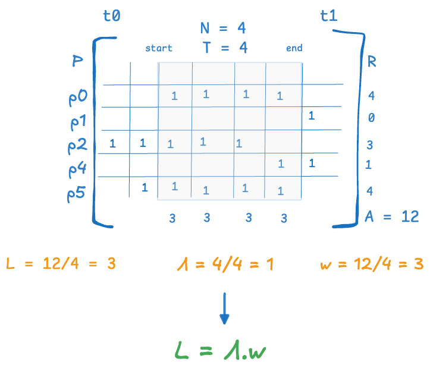

pcalc.presence_invariant_discrete
1# -*- coding: utf-8 -*- 2# Copyright (c) 2025 Krishna Kumar 3# SPDX-License-Identifier: MIT 4 5from typing import Generic, Optional, Tuple 6 7import numpy as np 8 9 10from .presence import PresenceAssertion 11from .presence_matrix import PresenceMatrix, PresenceMap 12 13 14class PresenceInvariantDiscrete: 15 """ 16 **A finite, scale-invariant, non-equilibrium version of Little's Law.** 17 18 This class computes the components of The Presence Invariant of a presence matrix. 19 20 The Presence Invariant states that for any *finite* interval `[start_time, end_time)` over the timescale `[t0, t1)` 21 of a presence matrix, the following invariant condition holds. 22 23 $$ 24 L = \Lambda \cdot w 25 $$ 26 where 27 28 - **$L$**: the average *presence* per unit time in the interval (see `avg_presence_per_unit_time`). 29 - **$\Lambda$**: The *flow rate* - a finite approximation of *presence arrival/departure rate* (see `flow_rate`). 30 - **$w$**: The *residence time* - a finite approximation of *presence duration* (see `metamodel.presence.Presence.duration`). 31 32 This invariant extends the classical formulation of Little’s Law, an equilibrium-based identity, by establishing a 33 conservation law (of presence) that remains valid across arbitrary timescales, and in non-linear, stochastic processes 34 that operate far from equilibrium. 35 36 It holds unconditionally for any presence matrix and finite window, and serves as a foundational 37 construct for reasoning about flow in non-linear systems. 38 39 The proof of this invariant is surprisingly simple and elementary. 40 41 **Derivation:** 42 43 44 45 Let $A$ be the total presence in the matrix over a finite time window `[start_time, end_time)` of $T$ time units. 46 Let $N$ be the number of distinct presences that overlap the window. 47 48 Let $R(p_i)$ be the portion of the duration of $p_i$ that overlaps the window. This is the *residence time* of $p_i$ in the window. 49 50 The following diagram shows these quantities and the derivation. 51 52  53 54 Then: 55 56 $$ 57 A = \sum_{i=1}^{N} R(p_i) 58 $$ 59 represents the sum of the elements in the presence matrix that foll in the time window `[start_time, end_time)`. 60 61 $A = 12$ presence-time-units in our example. 62 63 Average presence per unit time (see `avg_presence_per_unit_time`) is then: 64 65 $$ 66 L = A/T 67 $$ 68 69 $L = 3$ presences/time-unit in our example. 70 71 $w = $ Average residence time (see `avg_residence_time`) is then: 72 73 $$ 74 w = A/N 75 $$ 76 77 $w=3 time units per presence in our example. 78 79 We will define the flow rate as (see `flow_rate`): 80 81 $$ 82 \Lambda = N/T 83 $$ 84 85 $\Lambda = 1$ presence per time unit in our example. 86 87 Combining these: 88 89 $$ 90 L = A/T = A/N \cdot N/T = N/T \cdot A/N = \Lambda \cdot w 91 $$ 92 93 So we get 94 95 $$ 96 L = \Lambda \cdot w 97 $$ 98 99 100 This identity—what we call the *Presence Invariant*—is equivalent to a fundamental construct used in 101 all proofs of Little’s Law [1], and in particular, to one used by Stidham [2] to give a deterministic 102 proof of Little's Law [3] (see `flow_rate`). 103 104 Both the classical and the current presence-based versions are instances of *Rate Conservation Laws* 105 (as described by Miyazawa [3]). 106 107 However, the conserved quantities differ <sup>[1](#fn1)</sup>: 108 109 - In classical Little’s Law, $L = \lambda \cdot W$ holds *at equilibrium*, using long run arrival/departure rate $\lambda$ and 110 average presence duration $W$. 111 - In the Presence Invariant, $L = \Lambda \cdot w$ holds *universally*, where $\Lambda$ and $w$ are finite window 112 *approximations* of true arrival/departure rate and presence duration. 113 114 Stidham [2] proved the relationship between the quantities in the two versions and showed that 115 the classical form of Little’s Law emerges as a limiting case of the finite-window identity 116 *provided* the system approaches equilibrium as the window grows larger - ie the system is *convergent* in the long run. 117 118 If the system is *divergent* in the long run, at least one of the three quantities grows without limit and 119 the conservation law in the classical version does not hold. 120 121 However, the presence invariant continues to hold regardless of whether the system is convergent or divergent. 122 More details can be found under `flow_rate` and `avg_residence_time`. 123 124 Since non-linear systems rarely reach or maintain equilibrium, the Presence Invariant provides a more robust 125 and widely applicable conservation construct for causal reasoning about flow in such systems. 126 127 <small> 128 <a name="fn1"><strong>[1]</strong></a> 129 Note that we have lowercase $\lambda$ and uppercase $W$ in the classical law, and uppercase $\Lambda$ and 130 lowercase $w$ in the finite-window version, whereas $L$ remains the same in both. 131 132 This reflects the fact that in the Presence Invariant, $\Lambda$ is an overestimate of $\lambda$, and $w$ 133 is an underestimate of $W$. Both identities refer to the *same* observable construct for $L$. 134 </small> 135 136 ## References 137 138 1. **Little’s Law** 139 Little, J. D. C. (2011). *Little’s Law as viewed on its 50th anniversary*. MIT. 140 [https://people.cs.umass.edu/~emery/classes/cmpsci691st/readings/OS/Littles-Law-50-Years-Later.pdf](https://people.cs.umass.edu/~emery/classes/cmpsci691st/readings/OS/Littles-Law-50-Years-Later.pdf) 141 142 2. **Stidham's Proof of Little's Law** 143 Stidham, Shaler. Jr, *A last word on $L = \lambda \cdot W$*.Cornell University. 144 [https://pubsonline.informs.org/doi/epdf/10.1287/opre.22.2.417] 145 146 3. **Miyazawa on Rate Conservation Laws** 147 Miyazawa, M. (1994). *Rate conservation laws: a survey*. Science University of Tokyo. 148 [https://www.rs.tus.ac.jp/miyazawa/pdf-file/Miya1994-QS-RCL.pdf](https://www.rs.tus.ac.jp/miyazawa/pdf-file/Miya1994-QS-RCL.pdf) 149 150 151 """ 152 def __init__(self, matrix: PresenceMatrix): 153 self.matrix = matrix 154 """""" 155 self.presences: list[PresenceAssertion] = matrix.presences 156 """Only presences that overlap the interval [t0, t1) are included in Presence Metrics. 157 Note however that this may include presences that started before the interval or ended after the interval.""" 158 159 self.presence_map: list[PresenceMap] = matrix.presence_map 160 """Only presences that overlap the interval [t0, t1) are included in Presence Metrics. 161 Note however that this may include presences that started before the interval or ended after the interval.""" 162 163 self.ts = matrix.time_scale 164 """The timescale of the presence matrix. This is the default 'window' over which all metrics are computed.""" 165 166 def _resolve_range(self, start_time: Optional[float], end_time: Optional[float]) -> tuple[float, float]: 167 start = start_time if start_time is not None else self.ts.t0 168 end = end_time if end_time is not None else self.ts.t1 169 if start_time < self.ts.t0 or end_time > self.ts.t1: 170 raise ValueError( 171 f"Presence metrics are not defined outside the time scale of the presence matrix." 172 f"Time scale = [{self.ts.t0}, {self.ts.t1})." 173 f"Provided: [{start_time}, {end_time})" 174 ) 175 return start, end 176 177 178 def flow_rate(self, start_time: float = None, end_time: float = None) -> float: 179 """ 180 The flow rate Λ is defined as: 181 number of active presences in the matrix slice [:start_bin:end_bin] / 182 number of time bins in the slice (end_bin - start_bin) 183 184 Conceptually: 185 Let N be the number of presences (rows) that are active (non-zero) 186 in the matrix between start_time and end_time. 187 188 Let T be the number of discrete time bins (columns) in that interval. 189 190 Then: 191 flow_rate = Λ = N / T 192 193 Examples: 194 - If 4 presences span a 6-bin window, flow_rate = 4 / 6 = 0.666... 195 - If only one open-ended presence remains active over a 4-bin window, flow_rate = 1 / 4 = 0.25 196 197 The flow rate is a finite-window estimate of both long-run arrival rate and departure rate. 198 The precise relationship between flow rate, arrival rate, and departure rate is as follows: 199 200 N = number of presences that started *before* start_time (see `starting_presence_count`) 201 + number that started *in* the interval [start_time, end_time) (see `arrival_count`) 202 203 — this is also called the cumulative arrivals into the window 204 205 or equivalently: 206 207 N = number of presences that *ended* in [start_time, end_time) (see `departure_count`) 208 + number that ended *after* end_time (see `ending_presence_count`) 209 210 — this is the departure contribution from the window 211 212 These two decompositions of N are always equal; they just reflect different 213 ways of expressing the same set of active presences. 214 215 Intuitively, over a long enough window, if flow converges, most presences 216 will start and end within the window, with fewer presences that partially overlap 217 the interval at the beginning and end. 218 219 This makes N an (over) estimate of true arrivals or departures over that interval. 220 221 In other words, if flow through the boundary is asymptotically convergent over [start_time, end_time), 222 then: 223 flow_rate → arrival_rate → departure_rate 224 225 When flow is fully convergent over the interval, then: 226 flow_rate = arrival_rate = departure_rate 227 228 This equality is one of the key conditions for *stable* flow through the boundary. 229 230 On the other hand, if flow is not convergent over the interval, the delta between 231 flow rate, arrival rate, and departure rate will be large — either increasing (divergent) 232 or decreasing (convergent) over time. 233 """ 234 _, number_of_presences, num_bins = self.get_presence_summary(start_time, end_time) 235 return number_of_presences/num_bins if num_bins > 0 else 0.0 236 237 def avg_residence_time(self, start_time: float = None, end_time: float = None) -> float: 238 """ 239 Computes the average residence time over the interval [start_time, end_time). 240 241 Let \$ P \$ be the set of presences that overlap the interval \$[\\text{start\\_time}, \\text{end\\_time})\$. 242 243 The *residence time* \$ R(p) \$ is the time that presence \$ p \\in P \$ is active (overlaps) within that interval. 244 245 Presence is computed using bin-weighted overlap, so contributions may be fractional if presences only 246 partially cover a bin. 247 248 The average residence time \$ w \$ is given by: 249 250 \$$ 251 w = \\frac{\\sum_{p \\in P} R(p)}{|P|} 252 \$$ 253 254 If no presences are active in the interval, \$ w = 0.0 \$. 255 256 Note: 257 There are four possible ways a presence can overlap a window [start, end): 258 259 Ticks: 0 1 2 3 4 5 6 7 260 |---|---|---|---|---|---|---| 261 Window: |-----------| 262 263 Case 1: Fully inside 264 [=======] 265 266 Case 2: Starts before, ends inside 267 [=========== 268 269 Case 3: Starts inside, ends after 270 ===========] 271 272 Case 4: Fully spans window 273 [====================] 274 275 In all but Case 1, the window clips the presence, so the residence time 276 is smaller than the presence duration. In Case 1, residence time equals presence duration. 277 278 Intuitively, over a long enough window, if flow converges, most presences 279 will start and end within the window (Case 1), with fewer presences that partially overlap 280 the interval at the beginning and end or span the window (Cases 2–4). 281 282 This makes \$ w \$ an (under)estimate of true presence duration. 283 284 In other words, if flow through the boundary is asymptotically convergent over [start_time, end_time), 285 then: 286 residence time → presence duration. 287 288 When flow is fully convergent over the interval: 289 residence time = presence duration. 290 291 On the other hand, if flow is not convergent over the interval, the delta between 292 residence time and presence duration will be large — either increasing (divergent) 293 or decreasing (convergent) over time. 294 """ 295 total_presence_value, number_of_presences, _ = self.get_presence_summary(start_time, end_time) 296 return total_presence_value / number_of_presences if number_of_presences > 0 else 0.0 297 298 def avg_presence_per_unit_time(self, start_time: float = None, end_time: float = None) -> float: 299 """ 300 Computes the average presence per time bin over the interval [start_time, end_time). 301 302 Let \$ B \$ be the set of discrete time bins that cover the interval \$[\\text{start\\_time}, \\text{end\\_time})\$, 303 and let \$ P(b) \$ denote the total presence across all presences within each bin \$ b \\in B \$. 304 305 The average presence \$ L \$ is given by: 306 307 \$$ 308 L = \\frac{\\sum_{b \\in B} P(b)}{|B|} 309 \$$ 310 311 If the interval spans no bins, \$ L = 0.0 \$. 312 313 Note: 314 This is equivalent to computing the total presence by summing across rows (i.e., sum of all active presence 315 durations we used to compute residence time) divided by the number of bins in the interval. 316 317 Presence is computed using bin-weighted overlap, so contributions may be fractional if presences only 318 partially cover a bin. 319 320 Visually, this corresponds to summing presence *vertically* across bins: 321 322 Example: presences over time bins 323 324 Ticks: 0 1 2 3 4 325 |---|---|---|---| 326 P1: [=======] 327 P2: [=======] 328 P3: [=======] 329 330 Time bin 1: 331 ↑ (bin index 1 = [1, 2)) 332 |---| 333 P1: + 334 P2: + 335 P3: - 336 --------- 337 Sum: 2 338 339 So: 340 - Bin 1 has total presence = 2 341 - If we consider bins 1 to 3 (i.e., [1, 4)), and total presence = 5.5 342 - Then \$ L = 5.5 / 3 = 1.833... \$ 343 344 Conceptually, \$ L \$ reflects the average "load" or concurrency of presence in the system during the interval. 345 346 This metric is the time-relative (per unit time) complements the element-relative residence time \$ w \$. 347 """ 348 total_presence_value, _, num_bins = self.get_presence_summary(start_time, end_time) 349 return total_presence_value / num_bins if num_bins > 0 else 0.0 350 351 def get_presence_summary(self, start_time: float = None, end_time: float = None) -> Tuple[float, float, float]: 352 """ 353 Computes the three core quantities from which all presence-based metrics are derived: 354 355 - Total presence time \$ A \$ over the interval \$[\\text{start\\_time}, \\text{end\\_time})\$ 356 - Number of active presences \$ N \$ (i.e., rows overlapping the interval) 357 - Number of time bins \$ T \$ covering the interval 358 359 These three values form the basis for computing: 360 361 - Average presence per time bin: \$ L = A / T \$ 362 - Average residence time per presence: \$ w = A / N \$ 363 - Flow rate: \$ \\Lambda = N / T \$ 364 365 This method is the common workhorse that underlies `avg_presence_per_time_bin`, 366 `avg_residence_time_per_presence`, and `flow_rate`. 367 368 ... and much of this work lives in `PresenceMap.presence_value_in` 369 """ 370 start, end = self._resolve_range(start_time, end_time) 371 start_bin, end_bin = self.ts.bin_slice(start, end) 372 total_presence_value = 0 373 number_of_presences = 0 374 for pm in self.presence_map: 375 if pm.is_active(start_bin, end_bin): 376 total_presence_value += pm.presence_value_in(start_time, end_time) 377 number_of_presences += 1 378 379 return total_presence_value, number_of_presences, end_bin - start_bin 380 381 def get_presence_metrics(self, start_time: float = None, end_time: float = None) -> Tuple[float, float, float]: 382 """ 383 Computes all three components of the *Presence Invariant* for a finite window 384 $[ \text{start\_time}, \text{end\_time} )$ within the timescale $[ t_0, t_1 )$ 385 of the PresenceMatrix. 386 387 The Presence Invariant states that for *any* such interval: 388 389 $$ 390 L = \Lambda \cdot w 391 $$ 392 393 This invariant holds unconditionally and forms the foundation for reasoning about flow 394 in non-linear systems—systems that often operate far from equilibrium. It generalizes 395 the more familiar equilibrium-based Little’s Law by expressing a conservation law 396 that applies across all time scales. 397 398 - $L$: the *actual* average presence per unit time in the interval (this is not an approximation) 399 - $\Lambda$: the *finite approximation* of presence arrival rate (flow rate) 400 - $w$: the *finite approximation* of presence duration (residence time) 401 402 **Derivation:** 403 404 Let $ A $ be the total presence (i.e., the sum of active elements) in the matrix over the window. 405 Then: 406 407 $$ 408 A = \sum_{\text{rows}} \text{row totals} = \sum_{\text{columns}} \text{column totals} 409 $$ 410 411 Let $ N $ be the number of distinct presences in the window, and $ T $ the window length. 412 413 Then: 414 415 $$ 416 L = \frac{A}{T} = \frac{A}{N} \cdot \frac{N}{T} = w \cdot \Lambda 417 $$ 418 419 Hence: 420 421 $$ 422 L = \Lambda \cdot w 423 $$ 424 425 This identity—what we call the *Presence Invariant*—is a fundamental lemma used in 426 all proofs of Little’s Law [1], and can be seen as its finite-window specialization. 427 428 Both the classical and presence-based versions are instances of *Rate Conservation Laws* 429 (as described by Miyazawa [2]). However, the conserved parameters differ: 430 431 - In classical Little’s Law, $L = \lambda \cdot W$ holds *at equilibrium*, using true arrival rate $\lambda$ and average duration $W$. 432 - In the Presence Invariant, $L = \Lambda \cdot w$ holds *universally*, where $\Lambda$ and $w$ are finite approximations. 433 434 Since non-linear systems rarely reach or maintain equilibrium, the Presence Invariant provides a more robust 435 and widely applicable conservation principle for causal reasoning about flow in such systems. 436 437 ## References 438 439 1. **Little’s Law** 440 Little, J. D. C. (2011). *Little’s Law as viewed on its 50th anniversary*. MIT. 441 [https://people.cs.umass.edu/~emery/classes/cmpsci691st/readings/OS/Littles-Law-50-Years-Later.pdf](https://people.cs.umass.edu/~emery/classes/cmpsci691st/readings/OS/Littles-Law-50-Years-Later.pdf) 442 443 2. **Miyazawa on Rate Conservation Laws** 444 Miyazawa, M. (1994). *Rate conservation laws: a survey*. Science University of Tokyo. 445 [https://www.rs.tus.ac.jp/miyazawa/pdf-file/Miya1994-QS-RCL.pdf](https://www.rs.tus.ac.jp/miyazawa/pdf-file/Miya1994-QS-RCL.pdf) 446 447 """ 448 total_presence_value, number_of_presences, num_bins = self.get_presence_summary(start_time, end_time) 449 450 L = total_presence_value / num_bins if num_bins > 0 else 0.0 451 Λ = number_of_presences / num_bins if num_bins > 0 else 0.0 452 W = total_presence_value / number_of_presences if number_of_presences > 0 else 0.0 453 454 return L, Λ, W 455 456 457 458 459 def starting_presence_count(self, start_time: float = None, end_time: float = None) -> int: 460 start, end = self._resolve_range(start_time, end_time) 461 start_bin, end_bin = self.ts.bin_slice(start, end) 462 463 return sum( 464 1 for pm in self.presence_map 465 if pm.is_active(start_bin, end_bin) 466 #Note: here we must explicitly check the un-clipped 467 # bin indices, since we are looking for end indices that fall outside the 468 # window and even the matrix. So pm.end_bin is not the right test here. 469 and self.ts.bin_index(pm.presence.onset_time) < start_bin 470 ) 471 472 def ending_presence_count(self, start_time: float = None, end_time: float = None) -> int: 473 start, end = self._resolve_range(start_time, end_time) 474 start_bin, end_bin = self.ts.bin_slice(start, end) 475 476 return sum( 477 1 for pm in self.presence_map 478 if pm.is_active(start_bin, end_bin) 479 and (np.isinf(pm.presence.reset_time) or 480 # Note: here we must explicitly check the un-clipped 481 # bin indices, since we are looking for end indices that fall outside the 482 # window and even the matrix. So pm.end_bin is not the right test here. 483 self.ts.bin_index(pm.presence.reset_time) >= end_bin) 484 ) 485 486 def arrival_count(self, start_time: float = None, end_time: float = None) -> int: 487 """The number of presences that started within the window""" 488 start, end = self._resolve_range(start_time, end_time) 489 start_bin, end_bin = self.ts.bin_slice(start, end) 490 491 return sum( 492 1 for pm in self.presence_map 493 if start_bin <= self.ts.bin_index(pm.presence.onset_time) < end_bin 494 ) 495 496 def departure_count(self, start_time: float = None, end_time: float = None) -> int: 497 start, end = self._resolve_range(start_time, end_time) 498 start_bin, end_bin = self.ts.bin_slice(start, end) 499 500 return sum( 501 1 for pm in self.presence_map 502 if np.isfinite(pm.presence.reset_time) 503 and pm.is_active(start_bin, end_bin) 504 and self.ts.bin_index(pm.presence.reset_time) in range(start_bin, end_bin) 505 ) 506 507 508 def foo(self): 509 r""" 510 The key function of this class is to precisely compute the components of key rate conserved quantities 511 tied to Presence under both equilibrium and non-equilibrium conditions. 512 513 The key relationship that matters here is the Presence Invariant, which is rate conservation law 514 for a PresenceMatrix under non-equilibrium condition. 515 516 The Presence Invariant states that for *any* finite interval [start_time, end_time) over the timescale [t0, t1) 517 of a Presence Matrix: 518 519 $$ 520 L = \Lambda \cdot w 521 $$ 522 523 - $L$: the *actual* average presence per unit time in the interval (this is not an approximation) 524 - $\Lambda$: a *finite approximation* of presence arrival rate (flow rate) 525 - $w$: a *finite approximation* of presence duration (residence time) 526 527 This invariant holds unconditionally and forms the foundation for reasoning about flow 528 in non-linear systems—systems that often operate far from equilibrium. It generalizes 529 the more familiar Little’s Law that holds under certain equilibrium conditions as a conservation law 530 that applies across all time scales and non-equilibrium conditions. 531 532 The proof of this invariant is surprisingly simple and elementary. 533 534 **Derivation:** 535 536 Let $ A $ be the total presence (i.e., the sum of active elements) in the matrix over the window. 537 Then: 538 539 $$ 540 A = \sum_{\text{rows}} \text{row totals} = \sum_{\text{columns}} \text{column totals} 541 $$ 542 543 Let $ N $ be the number of distinct presences in the window, and $ T $ the window length. 544 545 Then: 546 547 $$ 548 549 L = \frac{A}{T} = \frac{A}{N} \cdot \frac{N}{T} = w \cdot \Lambda 550 551 $$ 552 553 Hence: 554 555 $$ L = \Lambda \cdot w $$ 556 557 The *Presence Invariant*—is a fundamental lemma used in 558 all proofs of Little’s Law [1], and can be seen as its finite-window version. 559 560 Both the classical and presence-based versions are instances of *Rate Conservation Laws* 561 (as described by Miyazawa [2]). However, the conserved parameters differ: 562 563 - In classical Little’s Law, $L = \lambda \cdot W$ holds *at equilibrium*, using true arrival rate $\lambda$ 564 and average duration $W$. 565 - In the Presence Invariant, $L = \Lambda \cdot w$ holds *universally*, where $\Lambda$ and $w$ are finite 566 window approximations. 567 568 Since non-linear systems rarely reach or maintain equilibrium, the Presence Invariant provides a more robust 569 and widely applicable conservation principle for causal reasoning about flow in such systems. 570 571 References: 572 573 1. **Little’s Law** 574 Little, J. D. C. (2011). *Little’s Law as viewed on its 50th anniversary*. MIT. 575 [https://people.cs.umass.edu/~emery/classes/cmpsci691st/readings/OS/Littles-Law-50-Years-Later.pdf](https://people.cs.umass.edu/~emery/classes/cmpsci691st/readings/OS/Littles-Law-50-Years-Later.pdf) 576 577 2. **Miyazawa on Rate Conservation Laws** 578 Miyazawa, M. (1994). *Rate conservation laws: a survey*. Science University of Tokyo. 579 [https://www.rs.tus.ac.jp/miyazawa/pdf-file/Miya1994-QS-RCL.pdf](https://www.rs.tus.ac.jp/miyazawa/pdf-file/Miya1994-QS-RCL.pdf) 580 """
15class PresenceInvariantDiscrete: 16 """ 17 **A finite, scale-invariant, non-equilibrium version of Little's Law.** 18 19 This class computes the components of The Presence Invariant of a presence matrix. 20 21 The Presence Invariant states that for any *finite* interval `[start_time, end_time)` over the timescale `[t0, t1)` 22 of a presence matrix, the following invariant condition holds. 23 24 $$ 25 L = \Lambda \cdot w 26 $$ 27 where 28 29 - **$L$**: the average *presence* per unit time in the interval (see `avg_presence_per_unit_time`). 30 - **$\Lambda$**: The *flow rate* - a finite approximation of *presence arrival/departure rate* (see `flow_rate`). 31 - **$w$**: The *residence time* - a finite approximation of *presence duration* (see `metamodel.presence.Presence.duration`). 32 33 This invariant extends the classical formulation of Little’s Law, an equilibrium-based identity, by establishing a 34 conservation law (of presence) that remains valid across arbitrary timescales, and in non-linear, stochastic processes 35 that operate far from equilibrium. 36 37 It holds unconditionally for any presence matrix and finite window, and serves as a foundational 38 construct for reasoning about flow in non-linear systems. 39 40 The proof of this invariant is surprisingly simple and elementary. 41 42 **Derivation:** 43 44 45 46 Let $A$ be the total presence in the matrix over a finite time window `[start_time, end_time)` of $T$ time units. 47 Let $N$ be the number of distinct presences that overlap the window. 48 49 Let $R(p_i)$ be the portion of the duration of $p_i$ that overlaps the window. This is the *residence time* of $p_i$ in the window. 50 51 The following diagram shows these quantities and the derivation. 52 53  54 55 Then: 56 57 $$ 58 A = \sum_{i=1}^{N} R(p_i) 59 $$ 60 represents the sum of the elements in the presence matrix that foll in the time window `[start_time, end_time)`. 61 62 $A = 12$ presence-time-units in our example. 63 64 Average presence per unit time (see `avg_presence_per_unit_time`) is then: 65 66 $$ 67 L = A/T 68 $$ 69 70 $L = 3$ presences/time-unit in our example. 71 72 $w = $ Average residence time (see `avg_residence_time`) is then: 73 74 $$ 75 w = A/N 76 $$ 77 78 $w=3 time units per presence in our example. 79 80 We will define the flow rate as (see `flow_rate`): 81 82 $$ 83 \Lambda = N/T 84 $$ 85 86 $\Lambda = 1$ presence per time unit in our example. 87 88 Combining these: 89 90 $$ 91 L = A/T = A/N \cdot N/T = N/T \cdot A/N = \Lambda \cdot w 92 $$ 93 94 So we get 95 96 $$ 97 L = \Lambda \cdot w 98 $$ 99 100 101 This identity—what we call the *Presence Invariant*—is equivalent to a fundamental construct used in 102 all proofs of Little’s Law [1], and in particular, to one used by Stidham [2] to give a deterministic 103 proof of Little's Law [3] (see `flow_rate`). 104 105 Both the classical and the current presence-based versions are instances of *Rate Conservation Laws* 106 (as described by Miyazawa [3]). 107 108 However, the conserved quantities differ <sup>[1](#fn1)</sup>: 109 110 - In classical Little’s Law, $L = \lambda \cdot W$ holds *at equilibrium*, using long run arrival/departure rate $\lambda$ and 111 average presence duration $W$. 112 - In the Presence Invariant, $L = \Lambda \cdot w$ holds *universally*, where $\Lambda$ and $w$ are finite window 113 *approximations* of true arrival/departure rate and presence duration. 114 115 Stidham [2] proved the relationship between the quantities in the two versions and showed that 116 the classical form of Little’s Law emerges as a limiting case of the finite-window identity 117 *provided* the system approaches equilibrium as the window grows larger - ie the system is *convergent* in the long run. 118 119 If the system is *divergent* in the long run, at least one of the three quantities grows without limit and 120 the conservation law in the classical version does not hold. 121 122 However, the presence invariant continues to hold regardless of whether the system is convergent or divergent. 123 More details can be found under `flow_rate` and `avg_residence_time`. 124 125 Since non-linear systems rarely reach or maintain equilibrium, the Presence Invariant provides a more robust 126 and widely applicable conservation construct for causal reasoning about flow in such systems. 127 128 <small> 129 <a name="fn1"><strong>[1]</strong></a> 130 Note that we have lowercase $\lambda$ and uppercase $W$ in the classical law, and uppercase $\Lambda$ and 131 lowercase $w$ in the finite-window version, whereas $L$ remains the same in both. 132 133 This reflects the fact that in the Presence Invariant, $\Lambda$ is an overestimate of $\lambda$, and $w$ 134 is an underestimate of $W$. Both identities refer to the *same* observable construct for $L$. 135 </small> 136 137 ## References 138 139 1. **Little’s Law** 140 Little, J. D. C. (2011). *Little’s Law as viewed on its 50th anniversary*. MIT. 141 [https://people.cs.umass.edu/~emery/classes/cmpsci691st/readings/OS/Littles-Law-50-Years-Later.pdf](https://people.cs.umass.edu/~emery/classes/cmpsci691st/readings/OS/Littles-Law-50-Years-Later.pdf) 142 143 2. **Stidham's Proof of Little's Law** 144 Stidham, Shaler. Jr, *A last word on $L = \lambda \cdot W$*.Cornell University. 145 [https://pubsonline.informs.org/doi/epdf/10.1287/opre.22.2.417] 146 147 3. **Miyazawa on Rate Conservation Laws** 148 Miyazawa, M. (1994). *Rate conservation laws: a survey*. Science University of Tokyo. 149 [https://www.rs.tus.ac.jp/miyazawa/pdf-file/Miya1994-QS-RCL.pdf](https://www.rs.tus.ac.jp/miyazawa/pdf-file/Miya1994-QS-RCL.pdf) 150 151 152 """ 153 def __init__(self, matrix: PresenceMatrix): 154 self.matrix = matrix 155 """""" 156 self.presences: list[PresenceAssertion] = matrix.presences 157 """Only presences that overlap the interval [t0, t1) are included in Presence Metrics. 158 Note however that this may include presences that started before the interval or ended after the interval.""" 159 160 self.presence_map: list[PresenceMap] = matrix.presence_map 161 """Only presences that overlap the interval [t0, t1) are included in Presence Metrics. 162 Note however that this may include presences that started before the interval or ended after the interval.""" 163 164 self.ts = matrix.time_scale 165 """The timescale of the presence matrix. This is the default 'window' over which all metrics are computed.""" 166 167 def _resolve_range(self, start_time: Optional[float], end_time: Optional[float]) -> tuple[float, float]: 168 start = start_time if start_time is not None else self.ts.t0 169 end = end_time if end_time is not None else self.ts.t1 170 if start_time < self.ts.t0 or end_time > self.ts.t1: 171 raise ValueError( 172 f"Presence metrics are not defined outside the time scale of the presence matrix." 173 f"Time scale = [{self.ts.t0}, {self.ts.t1})." 174 f"Provided: [{start_time}, {end_time})" 175 ) 176 return start, end 177 178 179 def flow_rate(self, start_time: float = None, end_time: float = None) -> float: 180 """ 181 The flow rate Λ is defined as: 182 number of active presences in the matrix slice [:start_bin:end_bin] / 183 number of time bins in the slice (end_bin - start_bin) 184 185 Conceptually: 186 Let N be the number of presences (rows) that are active (non-zero) 187 in the matrix between start_time and end_time. 188 189 Let T be the number of discrete time bins (columns) in that interval. 190 191 Then: 192 flow_rate = Λ = N / T 193 194 Examples: 195 - If 4 presences span a 6-bin window, flow_rate = 4 / 6 = 0.666... 196 - If only one open-ended presence remains active over a 4-bin window, flow_rate = 1 / 4 = 0.25 197 198 The flow rate is a finite-window estimate of both long-run arrival rate and departure rate. 199 The precise relationship between flow rate, arrival rate, and departure rate is as follows: 200 201 N = number of presences that started *before* start_time (see `starting_presence_count`) 202 + number that started *in* the interval [start_time, end_time) (see `arrival_count`) 203 204 — this is also called the cumulative arrivals into the window 205 206 or equivalently: 207 208 N = number of presences that *ended* in [start_time, end_time) (see `departure_count`) 209 + number that ended *after* end_time (see `ending_presence_count`) 210 211 — this is the departure contribution from the window 212 213 These two decompositions of N are always equal; they just reflect different 214 ways of expressing the same set of active presences. 215 216 Intuitively, over a long enough window, if flow converges, most presences 217 will start and end within the window, with fewer presences that partially overlap 218 the interval at the beginning and end. 219 220 This makes N an (over) estimate of true arrivals or departures over that interval. 221 222 In other words, if flow through the boundary is asymptotically convergent over [start_time, end_time), 223 then: 224 flow_rate → arrival_rate → departure_rate 225 226 When flow is fully convergent over the interval, then: 227 flow_rate = arrival_rate = departure_rate 228 229 This equality is one of the key conditions for *stable* flow through the boundary. 230 231 On the other hand, if flow is not convergent over the interval, the delta between 232 flow rate, arrival rate, and departure rate will be large — either increasing (divergent) 233 or decreasing (convergent) over time. 234 """ 235 _, number_of_presences, num_bins = self.get_presence_summary(start_time, end_time) 236 return number_of_presences/num_bins if num_bins > 0 else 0.0 237 238 def avg_residence_time(self, start_time: float = None, end_time: float = None) -> float: 239 """ 240 Computes the average residence time over the interval [start_time, end_time). 241 242 Let \$ P \$ be the set of presences that overlap the interval \$[\\text{start\\_time}, \\text{end\\_time})\$. 243 244 The *residence time* \$ R(p) \$ is the time that presence \$ p \\in P \$ is active (overlaps) within that interval. 245 246 Presence is computed using bin-weighted overlap, so contributions may be fractional if presences only 247 partially cover a bin. 248 249 The average residence time \$ w \$ is given by: 250 251 \$$ 252 w = \\frac{\\sum_{p \\in P} R(p)}{|P|} 253 \$$ 254 255 If no presences are active in the interval, \$ w = 0.0 \$. 256 257 Note: 258 There are four possible ways a presence can overlap a window [start, end): 259 260 Ticks: 0 1 2 3 4 5 6 7 261 |---|---|---|---|---|---|---| 262 Window: |-----------| 263 264 Case 1: Fully inside 265 [=======] 266 267 Case 2: Starts before, ends inside 268 [=========== 269 270 Case 3: Starts inside, ends after 271 ===========] 272 273 Case 4: Fully spans window 274 [====================] 275 276 In all but Case 1, the window clips the presence, so the residence time 277 is smaller than the presence duration. In Case 1, residence time equals presence duration. 278 279 Intuitively, over a long enough window, if flow converges, most presences 280 will start and end within the window (Case 1), with fewer presences that partially overlap 281 the interval at the beginning and end or span the window (Cases 2–4). 282 283 This makes \$ w \$ an (under)estimate of true presence duration. 284 285 In other words, if flow through the boundary is asymptotically convergent over [start_time, end_time), 286 then: 287 residence time → presence duration. 288 289 When flow is fully convergent over the interval: 290 residence time = presence duration. 291 292 On the other hand, if flow is not convergent over the interval, the delta between 293 residence time and presence duration will be large — either increasing (divergent) 294 or decreasing (convergent) over time. 295 """ 296 total_presence_value, number_of_presences, _ = self.get_presence_summary(start_time, end_time) 297 return total_presence_value / number_of_presences if number_of_presences > 0 else 0.0 298 299 def avg_presence_per_unit_time(self, start_time: float = None, end_time: float = None) -> float: 300 """ 301 Computes the average presence per time bin over the interval [start_time, end_time). 302 303 Let \$ B \$ be the set of discrete time bins that cover the interval \$[\\text{start\\_time}, \\text{end\\_time})\$, 304 and let \$ P(b) \$ denote the total presence across all presences within each bin \$ b \\in B \$. 305 306 The average presence \$ L \$ is given by: 307 308 \$$ 309 L = \\frac{\\sum_{b \\in B} P(b)}{|B|} 310 \$$ 311 312 If the interval spans no bins, \$ L = 0.0 \$. 313 314 Note: 315 This is equivalent to computing the total presence by summing across rows (i.e., sum of all active presence 316 durations we used to compute residence time) divided by the number of bins in the interval. 317 318 Presence is computed using bin-weighted overlap, so contributions may be fractional if presences only 319 partially cover a bin. 320 321 Visually, this corresponds to summing presence *vertically* across bins: 322 323 Example: presences over time bins 324 325 Ticks: 0 1 2 3 4 326 |---|---|---|---| 327 P1: [=======] 328 P2: [=======] 329 P3: [=======] 330 331 Time bin 1: 332 ↑ (bin index 1 = [1, 2)) 333 |---| 334 P1: + 335 P2: + 336 P3: - 337 --------- 338 Sum: 2 339 340 So: 341 - Bin 1 has total presence = 2 342 - If we consider bins 1 to 3 (i.e., [1, 4)), and total presence = 5.5 343 - Then \$ L = 5.5 / 3 = 1.833... \$ 344 345 Conceptually, \$ L \$ reflects the average "load" or concurrency of presence in the system during the interval. 346 347 This metric is the time-relative (per unit time) complements the element-relative residence time \$ w \$. 348 """ 349 total_presence_value, _, num_bins = self.get_presence_summary(start_time, end_time) 350 return total_presence_value / num_bins if num_bins > 0 else 0.0 351 352 def get_presence_summary(self, start_time: float = None, end_time: float = None) -> Tuple[float, float, float]: 353 """ 354 Computes the three core quantities from which all presence-based metrics are derived: 355 356 - Total presence time \$ A \$ over the interval \$[\\text{start\\_time}, \\text{end\\_time})\$ 357 - Number of active presences \$ N \$ (i.e., rows overlapping the interval) 358 - Number of time bins \$ T \$ covering the interval 359 360 These three values form the basis for computing: 361 362 - Average presence per time bin: \$ L = A / T \$ 363 - Average residence time per presence: \$ w = A / N \$ 364 - Flow rate: \$ \\Lambda = N / T \$ 365 366 This method is the common workhorse that underlies `avg_presence_per_time_bin`, 367 `avg_residence_time_per_presence`, and `flow_rate`. 368 369 ... and much of this work lives in `PresenceMap.presence_value_in` 370 """ 371 start, end = self._resolve_range(start_time, end_time) 372 start_bin, end_bin = self.ts.bin_slice(start, end) 373 total_presence_value = 0 374 number_of_presences = 0 375 for pm in self.presence_map: 376 if pm.is_active(start_bin, end_bin): 377 total_presence_value += pm.presence_value_in(start_time, end_time) 378 number_of_presences += 1 379 380 return total_presence_value, number_of_presences, end_bin - start_bin 381 382 def get_presence_metrics(self, start_time: float = None, end_time: float = None) -> Tuple[float, float, float]: 383 """ 384 Computes all three components of the *Presence Invariant* for a finite window 385 $[ \text{start\_time}, \text{end\_time} )$ within the timescale $[ t_0, t_1 )$ 386 of the PresenceMatrix. 387 388 The Presence Invariant states that for *any* such interval: 389 390 $$ 391 L = \Lambda \cdot w 392 $$ 393 394 This invariant holds unconditionally and forms the foundation for reasoning about flow 395 in non-linear systems—systems that often operate far from equilibrium. It generalizes 396 the more familiar equilibrium-based Little’s Law by expressing a conservation law 397 that applies across all time scales. 398 399 - $L$: the *actual* average presence per unit time in the interval (this is not an approximation) 400 - $\Lambda$: the *finite approximation* of presence arrival rate (flow rate) 401 - $w$: the *finite approximation* of presence duration (residence time) 402 403 **Derivation:** 404 405 Let $ A $ be the total presence (i.e., the sum of active elements) in the matrix over the window. 406 Then: 407 408 $$ 409 A = \sum_{\text{rows}} \text{row totals} = \sum_{\text{columns}} \text{column totals} 410 $$ 411 412 Let $ N $ be the number of distinct presences in the window, and $ T $ the window length. 413 414 Then: 415 416 $$ 417 L = \frac{A}{T} = \frac{A}{N} \cdot \frac{N}{T} = w \cdot \Lambda 418 $$ 419 420 Hence: 421 422 $$ 423 L = \Lambda \cdot w 424 $$ 425 426 This identity—what we call the *Presence Invariant*—is a fundamental lemma used in 427 all proofs of Little’s Law [1], and can be seen as its finite-window specialization. 428 429 Both the classical and presence-based versions are instances of *Rate Conservation Laws* 430 (as described by Miyazawa [2]). However, the conserved parameters differ: 431 432 - In classical Little’s Law, $L = \lambda \cdot W$ holds *at equilibrium*, using true arrival rate $\lambda$ and average duration $W$. 433 - In the Presence Invariant, $L = \Lambda \cdot w$ holds *universally*, where $\Lambda$ and $w$ are finite approximations. 434 435 Since non-linear systems rarely reach or maintain equilibrium, the Presence Invariant provides a more robust 436 and widely applicable conservation principle for causal reasoning about flow in such systems. 437 438 ## References 439 440 1. **Little’s Law** 441 Little, J. D. C. (2011). *Little’s Law as viewed on its 50th anniversary*. MIT. 442 [https://people.cs.umass.edu/~emery/classes/cmpsci691st/readings/OS/Littles-Law-50-Years-Later.pdf](https://people.cs.umass.edu/~emery/classes/cmpsci691st/readings/OS/Littles-Law-50-Years-Later.pdf) 443 444 2. **Miyazawa on Rate Conservation Laws** 445 Miyazawa, M. (1994). *Rate conservation laws: a survey*. Science University of Tokyo. 446 [https://www.rs.tus.ac.jp/miyazawa/pdf-file/Miya1994-QS-RCL.pdf](https://www.rs.tus.ac.jp/miyazawa/pdf-file/Miya1994-QS-RCL.pdf) 447 448 """ 449 total_presence_value, number_of_presences, num_bins = self.get_presence_summary(start_time, end_time) 450 451 L = total_presence_value / num_bins if num_bins > 0 else 0.0 452 Λ = number_of_presences / num_bins if num_bins > 0 else 0.0 453 W = total_presence_value / number_of_presences if number_of_presences > 0 else 0.0 454 455 return L, Λ, W 456 457 458 459 460 def starting_presence_count(self, start_time: float = None, end_time: float = None) -> int: 461 start, end = self._resolve_range(start_time, end_time) 462 start_bin, end_bin = self.ts.bin_slice(start, end) 463 464 return sum( 465 1 for pm in self.presence_map 466 if pm.is_active(start_bin, end_bin) 467 #Note: here we must explicitly check the un-clipped 468 # bin indices, since we are looking for end indices that fall outside the 469 # window and even the matrix. So pm.end_bin is not the right test here. 470 and self.ts.bin_index(pm.presence.onset_time) < start_bin 471 ) 472 473 def ending_presence_count(self, start_time: float = None, end_time: float = None) -> int: 474 start, end = self._resolve_range(start_time, end_time) 475 start_bin, end_bin = self.ts.bin_slice(start, end) 476 477 return sum( 478 1 for pm in self.presence_map 479 if pm.is_active(start_bin, end_bin) 480 and (np.isinf(pm.presence.reset_time) or 481 # Note: here we must explicitly check the un-clipped 482 # bin indices, since we are looking for end indices that fall outside the 483 # window and even the matrix. So pm.end_bin is not the right test here. 484 self.ts.bin_index(pm.presence.reset_time) >= end_bin) 485 ) 486 487 def arrival_count(self, start_time: float = None, end_time: float = None) -> int: 488 """The number of presences that started within the window""" 489 start, end = self._resolve_range(start_time, end_time) 490 start_bin, end_bin = self.ts.bin_slice(start, end) 491 492 return sum( 493 1 for pm in self.presence_map 494 if start_bin <= self.ts.bin_index(pm.presence.onset_time) < end_bin 495 ) 496 497 def departure_count(self, start_time: float = None, end_time: float = None) -> int: 498 start, end = self._resolve_range(start_time, end_time) 499 start_bin, end_bin = self.ts.bin_slice(start, end) 500 501 return sum( 502 1 for pm in self.presence_map 503 if np.isfinite(pm.presence.reset_time) 504 and pm.is_active(start_bin, end_bin) 505 and self.ts.bin_index(pm.presence.reset_time) in range(start_bin, end_bin) 506 ) 507 508 509 def foo(self): 510 r""" 511 The key function of this class is to precisely compute the components of key rate conserved quantities 512 tied to Presence under both equilibrium and non-equilibrium conditions. 513 514 The key relationship that matters here is the Presence Invariant, which is rate conservation law 515 for a PresenceMatrix under non-equilibrium condition. 516 517 The Presence Invariant states that for *any* finite interval [start_time, end_time) over the timescale [t0, t1) 518 of a Presence Matrix: 519 520 $$ 521 L = \Lambda \cdot w 522 $$ 523 524 - $L$: the *actual* average presence per unit time in the interval (this is not an approximation) 525 - $\Lambda$: a *finite approximation* of presence arrival rate (flow rate) 526 - $w$: a *finite approximation* of presence duration (residence time) 527 528 This invariant holds unconditionally and forms the foundation for reasoning about flow 529 in non-linear systems—systems that often operate far from equilibrium. It generalizes 530 the more familiar Little’s Law that holds under certain equilibrium conditions as a conservation law 531 that applies across all time scales and non-equilibrium conditions. 532 533 The proof of this invariant is surprisingly simple and elementary. 534 535 **Derivation:** 536 537 Let $ A $ be the total presence (i.e., the sum of active elements) in the matrix over the window. 538 Then: 539 540 $$ 541 A = \sum_{\text{rows}} \text{row totals} = \sum_{\text{columns}} \text{column totals} 542 $$ 543 544 Let $ N $ be the number of distinct presences in the window, and $ T $ the window length. 545 546 Then: 547 548 $$ 549 550 L = \frac{A}{T} = \frac{A}{N} \cdot \frac{N}{T} = w \cdot \Lambda 551 552 $$ 553 554 Hence: 555 556 $$ L = \Lambda \cdot w $$ 557 558 The *Presence Invariant*—is a fundamental lemma used in 559 all proofs of Little’s Law [1], and can be seen as its finite-window version. 560 561 Both the classical and presence-based versions are instances of *Rate Conservation Laws* 562 (as described by Miyazawa [2]). However, the conserved parameters differ: 563 564 - In classical Little’s Law, $L = \lambda \cdot W$ holds *at equilibrium*, using true arrival rate $\lambda$ 565 and average duration $W$. 566 - In the Presence Invariant, $L = \Lambda \cdot w$ holds *universally*, where $\Lambda$ and $w$ are finite 567 window approximations. 568 569 Since non-linear systems rarely reach or maintain equilibrium, the Presence Invariant provides a more robust 570 and widely applicable conservation principle for causal reasoning about flow in such systems. 571 572 References: 573 574 1. **Little’s Law** 575 Little, J. D. C. (2011). *Little’s Law as viewed on its 50th anniversary*. MIT. 576 [https://people.cs.umass.edu/~emery/classes/cmpsci691st/readings/OS/Littles-Law-50-Years-Later.pdf](https://people.cs.umass.edu/~emery/classes/cmpsci691st/readings/OS/Littles-Law-50-Years-Later.pdf) 577 578 2. **Miyazawa on Rate Conservation Laws** 579 Miyazawa, M. (1994). *Rate conservation laws: a survey*. Science University of Tokyo. 580 [https://www.rs.tus.ac.jp/miyazawa/pdf-file/Miya1994-QS-RCL.pdf](https://www.rs.tus.ac.jp/miyazawa/pdf-file/Miya1994-QS-RCL.pdf) 581 """
A finite, scale-invariant, non-equilibrium version of Little's Law.
This class computes the components of The Presence Invariant of a presence matrix.
The Presence Invariant states that for any finite interval [start_time, end_time) over the timescale [t0, t1)
of a presence matrix, the following invariant condition holds.
$$ L = \Lambda \cdot w $$ where
- $L$: the average presence per unit time in the interval (see
avg_presence_per_unit_time). - $\Lambda$: The flow rate - a finite approximation of presence arrival/departure rate (see
flow_rate). - $w$: The residence time - a finite approximation of presence duration (see
metamodel.presence.Presence.duration).
This invariant extends the classical formulation of Little’s Law, an equilibrium-based identity, by establishing a conservation law (of presence) that remains valid across arbitrary timescales, and in non-linear, stochastic processes that operate far from equilibrium.
It holds unconditionally for any presence matrix and finite window, and serves as a foundational construct for reasoning about flow in non-linear systems.
The proof of this invariant is surprisingly simple and elementary.
Derivation:
Let $A$ be the total presence in the matrix over a finite time window [start_time, end_time) of $T$ time units.
Let $N$ be the number of distinct presences that overlap the window.
Let $R(p_i)$ be the portion of the duration of $p_i$ that overlaps the window. This is the residence time of $p_i$ in the window.
The following diagram shows these quantities and the derivation.

Then:
$$
A = \sum_{i=1}^{N} R(p_i)
$$
represents the sum of the elements in the presence matrix that foll in the time window [start_time, end_time).
$A = 12$ presence-time-units in our example.
Average presence per unit time (see avg_presence_per_unit_time) is then:
$$ L = A/T $$
$L = 3$ presences/time-unit in our example.
$w = $ Average residence time (see avg_residence_time) is then:
$$ w = A/N $$
$w=3 time units per presence in our example.
We will define the flow rate as (see flow_rate):
$$ \Lambda = N/T $$
$\Lambda = 1$ presence per time unit in our example.
Combining these:
$$ L = A/T = A/N \cdot N/T = N/T \cdot A/N = \Lambda \cdot w $$
So we get
$$ L = \Lambda \cdot w $$
This identity—what we call the Presence Invariant—is equivalent to a fundamental construct used in
all proofs of Little’s Law [1], and in particular, to one used by Stidham [2] to give a deterministic
proof of Little's Law [3] (see flow_rate).
Both the classical and the current presence-based versions are instances of Rate Conservation Laws (as described by Miyazawa [3]).
However, the conserved quantities differ 1:
- In classical Little’s Law, $L = \lambda \cdot W$ holds at equilibrium, using long run arrival/departure rate $\lambda$ and average presence duration $W$.
- In the Presence Invariant, $L = \Lambda \cdot w$ holds universally, where $\Lambda$ and $w$ are finite window approximations of true arrival/departure rate and presence duration.
Stidham [2] proved the relationship between the quantities in the two versions and showed that the classical form of Little’s Law emerges as a limiting case of the finite-window identity provided the system approaches equilibrium as the window grows larger - ie the system is convergent in the long run.
If the system is divergent in the long run, at least one of the three quantities grows without limit and the conservation law in the classical version does not hold.
However, the presence invariant continues to hold regardless of whether the system is convergent or divergent.
More details can be found under flow_rate and avg_residence_time.
Since non-linear systems rarely reach or maintain equilibrium, the Presence Invariant provides a more robust and widely applicable conservation construct for causal reasoning about flow in such systems.
[1] Note that we have lowercase $\lambda$ and uppercase $W$ in the classical law, and uppercase $\Lambda$ and lowercase $w$ in the finite-window version, whereas $L$ remains the same in both. This reflects the fact that in the Presence Invariant, $\Lambda$ is an overestimate of $\lambda$, and $w$ is an underestimate of $W$. Both identities refer to the same observable construct for $L$.References
Little’s Law Little, J. D. C. (2011). Little’s Law as viewed on its 50th anniversary. MIT. https://people.cs.umass.edu/~emery/classes/cmpsci691st/readings/OS/Littles-Law-50-Years-Later.pdf
Stidham's Proof of Little's Law Stidham, Shaler. Jr, A last word on $L = \lambda \cdot W$.Cornell University. [https://pubsonline.informs.org/doi/epdf/10.1287/opre.22.2.417]
Miyazawa on Rate Conservation Laws Miyazawa, M. (1994). Rate conservation laws: a survey. Science University of Tokyo. https://www.rs.tus.ac.jp/miyazawa/pdf-file/Miya1994-QS-RCL.pdf
153 def __init__(self, matrix: PresenceMatrix): 154 self.matrix = matrix 155 """""" 156 self.presences: list[PresenceAssertion] = matrix.presences 157 """Only presences that overlap the interval [t0, t1) are included in Presence Metrics. 158 Note however that this may include presences that started before the interval or ended after the interval.""" 159 160 self.presence_map: list[PresenceMap] = matrix.presence_map 161 """Only presences that overlap the interval [t0, t1) are included in Presence Metrics. 162 Note however that this may include presences that started before the interval or ended after the interval.""" 163 164 self.ts = matrix.time_scale 165 """The timescale of the presence matrix. This is the default 'window' over which all metrics are computed."""
Only presences that overlap the interval [t0, t1) are included in Presence Metrics. Note however that this may include presences that started before the interval or ended after the interval.
Only presences that overlap the interval [t0, t1) are included in Presence Metrics. Note however that this may include presences that started before the interval or ended after the interval.
The timescale of the presence matrix. This is the default 'window' over which all metrics are computed.
179 def flow_rate(self, start_time: float = None, end_time: float = None) -> float: 180 """ 181 The flow rate Λ is defined as: 182 number of active presences in the matrix slice [:start_bin:end_bin] / 183 number of time bins in the slice (end_bin - start_bin) 184 185 Conceptually: 186 Let N be the number of presences (rows) that are active (non-zero) 187 in the matrix between start_time and end_time. 188 189 Let T be the number of discrete time bins (columns) in that interval. 190 191 Then: 192 flow_rate = Λ = N / T 193 194 Examples: 195 - If 4 presences span a 6-bin window, flow_rate = 4 / 6 = 0.666... 196 - If only one open-ended presence remains active over a 4-bin window, flow_rate = 1 / 4 = 0.25 197 198 The flow rate is a finite-window estimate of both long-run arrival rate and departure rate. 199 The precise relationship between flow rate, arrival rate, and departure rate is as follows: 200 201 N = number of presences that started *before* start_time (see `starting_presence_count`) 202 + number that started *in* the interval [start_time, end_time) (see `arrival_count`) 203 204 — this is also called the cumulative arrivals into the window 205 206 or equivalently: 207 208 N = number of presences that *ended* in [start_time, end_time) (see `departure_count`) 209 + number that ended *after* end_time (see `ending_presence_count`) 210 211 — this is the departure contribution from the window 212 213 These two decompositions of N are always equal; they just reflect different 214 ways of expressing the same set of active presences. 215 216 Intuitively, over a long enough window, if flow converges, most presences 217 will start and end within the window, with fewer presences that partially overlap 218 the interval at the beginning and end. 219 220 This makes N an (over) estimate of true arrivals or departures over that interval. 221 222 In other words, if flow through the boundary is asymptotically convergent over [start_time, end_time), 223 then: 224 flow_rate → arrival_rate → departure_rate 225 226 When flow is fully convergent over the interval, then: 227 flow_rate = arrival_rate = departure_rate 228 229 This equality is one of the key conditions for *stable* flow through the boundary. 230 231 On the other hand, if flow is not convergent over the interval, the delta between 232 flow rate, arrival rate, and departure rate will be large — either increasing (divergent) 233 or decreasing (convergent) over time. 234 """ 235 _, number_of_presences, num_bins = self.get_presence_summary(start_time, end_time) 236 return number_of_presences/num_bins if num_bins > 0 else 0.0
The flow rate Λ is defined as: number of active presences in the matrix slice [:start_bin:end_bin] / number of time bins in the slice (end_bin - start_bin)
Conceptually:
Let N be the number of presences (rows) that are active (non-zero) in the matrix between start_time and end_time.
Let T be the number of discrete time bins (columns) in that interval.
Then: flow_rate = Λ = N / T
Examples:
- If 4 presences span a 6-bin window, flow_rate = 4 / 6 = 0.666...
- If only one open-ended presence remains active over a 4-bin window, flow_rate = 1 / 4 = 0.25
The flow rate is a finite-window estimate of both long-run arrival rate and departure rate. The precise relationship between flow rate, arrival rate, and departure rate is as follows:
N = number of presences that started *before* start_time (see `starting_presence_count`)
+ number that started *in* the interval [start_time, end_time) (see `arrival_count`)
— this is also called the cumulative arrivals into the window
or equivalently:
N = number of presences that *ended* in [start_time, end_time) (see `departure_count`)
+ number that ended *after* end_time (see `ending_presence_count`)
— this is the departure contribution from the window
These two decompositions of N are always equal; they just reflect different
ways of expressing the same set of active presences.
Intuitively, over a long enough window, if flow converges, most presences will start and end within the window, with fewer presences that partially overlap the interval at the beginning and end.
This makes N an (over) estimate of true arrivals or departures over that interval.
In other words, if flow through the boundary is asymptotically convergent over [start_time, end_time), then: flow_rate → arrival_rate → departure_rate
When flow is fully convergent over the interval, then: flow_rate = arrival_rate = departure_rate
This equality is one of the key conditions for stable flow through the boundary.
On the other hand, if flow is not convergent over the interval, the delta between flow rate, arrival rate, and departure rate will be large — either increasing (divergent) or decreasing (convergent) over time.
238 def avg_residence_time(self, start_time: float = None, end_time: float = None) -> float: 239 """ 240 Computes the average residence time over the interval [start_time, end_time). 241 242 Let \$ P \$ be the set of presences that overlap the interval \$[\\text{start\\_time}, \\text{end\\_time})\$. 243 244 The *residence time* \$ R(p) \$ is the time that presence \$ p \\in P \$ is active (overlaps) within that interval. 245 246 Presence is computed using bin-weighted overlap, so contributions may be fractional if presences only 247 partially cover a bin. 248 249 The average residence time \$ w \$ is given by: 250 251 \$$ 252 w = \\frac{\\sum_{p \\in P} R(p)}{|P|} 253 \$$ 254 255 If no presences are active in the interval, \$ w = 0.0 \$. 256 257 Note: 258 There are four possible ways a presence can overlap a window [start, end): 259 260 Ticks: 0 1 2 3 4 5 6 7 261 |---|---|---|---|---|---|---| 262 Window: |-----------| 263 264 Case 1: Fully inside 265 [=======] 266 267 Case 2: Starts before, ends inside 268 [=========== 269 270 Case 3: Starts inside, ends after 271 ===========] 272 273 Case 4: Fully spans window 274 [====================] 275 276 In all but Case 1, the window clips the presence, so the residence time 277 is smaller than the presence duration. In Case 1, residence time equals presence duration. 278 279 Intuitively, over a long enough window, if flow converges, most presences 280 will start and end within the window (Case 1), with fewer presences that partially overlap 281 the interval at the beginning and end or span the window (Cases 2–4). 282 283 This makes \$ w \$ an (under)estimate of true presence duration. 284 285 In other words, if flow through the boundary is asymptotically convergent over [start_time, end_time), 286 then: 287 residence time → presence duration. 288 289 When flow is fully convergent over the interval: 290 residence time = presence duration. 291 292 On the other hand, if flow is not convergent over the interval, the delta between 293 residence time and presence duration will be large — either increasing (divergent) 294 or decreasing (convergent) over time. 295 """ 296 total_presence_value, number_of_presences, _ = self.get_presence_summary(start_time, end_time) 297 return total_presence_value / number_of_presences if number_of_presences > 0 else 0.0
Computes the average residence time over the interval [start_time, end_time).
Let \$ P \$ be the set of presences that overlap the interval \$[\text{start_time}, \text{end_time})\$.
The residence time \$ R(p) \$ is the time that presence \$ p \in P \$ is active (overlaps) within that interval.
Presence is computed using bin-weighted overlap, so contributions may be fractional if presences only partially cover a bin.
The average residence time \$ w \$ is given by:
\$$ w = \frac{\sum_{p \in P} R(p)}{|P|} \$$
If no presences are active in the interval, \$ w = 0.0 \$.
Note:
There are four possible ways a presence can overlap a window [start, end):
Ticks: 0 1 2 3 4 5 6 7 |---|---|---|---|---|---|---| Window: |-----------|
Case 1: Fully inside [=======]
Case 2: Starts before, ends inside [===========
Case 3: Starts inside, ends after ===========]
Case 4: Fully spans window [====================]
In all but Case 1, the window clips the presence, so the residence time is smaller than the presence duration. In Case 1, residence time equals presence duration.
Intuitively, over a long enough window, if flow converges, most presences will start and end within the window (Case 1), with fewer presences that partially overlap the interval at the beginning and end or span the window (Cases 2–4).
This makes \$ w \$ an (under)estimate of true presence duration.
In other words, if flow through the boundary is asymptotically convergent over [start_time, end_time), then: residence time → presence duration.
When flow is fully convergent over the interval: residence time = presence duration.
On the other hand, if flow is not convergent over the interval, the delta between residence time and presence duration will be large — either increasing (divergent) or decreasing (convergent) over time.
299 def avg_presence_per_unit_time(self, start_time: float = None, end_time: float = None) -> float: 300 """ 301 Computes the average presence per time bin over the interval [start_time, end_time). 302 303 Let \$ B \$ be the set of discrete time bins that cover the interval \$[\\text{start\\_time}, \\text{end\\_time})\$, 304 and let \$ P(b) \$ denote the total presence across all presences within each bin \$ b \\in B \$. 305 306 The average presence \$ L \$ is given by: 307 308 \$$ 309 L = \\frac{\\sum_{b \\in B} P(b)}{|B|} 310 \$$ 311 312 If the interval spans no bins, \$ L = 0.0 \$. 313 314 Note: 315 This is equivalent to computing the total presence by summing across rows (i.e., sum of all active presence 316 durations we used to compute residence time) divided by the number of bins in the interval. 317 318 Presence is computed using bin-weighted overlap, so contributions may be fractional if presences only 319 partially cover a bin. 320 321 Visually, this corresponds to summing presence *vertically* across bins: 322 323 Example: presences over time bins 324 325 Ticks: 0 1 2 3 4 326 |---|---|---|---| 327 P1: [=======] 328 P2: [=======] 329 P3: [=======] 330 331 Time bin 1: 332 ↑ (bin index 1 = [1, 2)) 333 |---| 334 P1: + 335 P2: + 336 P3: - 337 --------- 338 Sum: 2 339 340 So: 341 - Bin 1 has total presence = 2 342 - If we consider bins 1 to 3 (i.e., [1, 4)), and total presence = 5.5 343 - Then \$ L = 5.5 / 3 = 1.833... \$ 344 345 Conceptually, \$ L \$ reflects the average "load" or concurrency of presence in the system during the interval. 346 347 This metric is the time-relative (per unit time) complements the element-relative residence time \$ w \$. 348 """ 349 total_presence_value, _, num_bins = self.get_presence_summary(start_time, end_time) 350 return total_presence_value / num_bins if num_bins > 0 else 0.0
Computes the average presence per time bin over the interval [start_time, end_time).
Let \$ B \$ be the set of discrete time bins that cover the interval \$[\text{start_time}, \text{end_time})\$, and let \$ P(b) \$ denote the total presence across all presences within each bin \$ b \in B \$.
The average presence \$ L \$ is given by:
\$$ L = \frac{\sum_{b \in B} P(b)}{|B|} \$$
If the interval spans no bins, \$ L = 0.0 \$.
Note:
This is equivalent to computing the total presence by summing across rows (i.e., sum of all active presence durations we used to compute residence time) divided by the number of bins in the interval.
Presence is computed using bin-weighted overlap, so contributions may be fractional if presences only partially cover a bin.
Visually, this corresponds to summing presence vertically across bins:
Example: presences over time bins
Ticks: 0 1 2 3 4 |---|---|---|---| P1: [=======] P2: [=======] P3: [=======]
Time bin 1: ↑ (bin index 1 = [1, 2)) |---| P1: + P2: + P3: - --------- Sum: 2
So: - Bin 1 has total presence = 2 - If we consider bins 1 to 3 (i.e., [1, 4)), and total presence = 5.5 - Then \$ L = 5.5 / 3 = 1.833... \$
Conceptually, \$ L \$ reflects the average "load" or concurrency of presence in the system during the interval.
This metric is the time-relative (per unit time) complements the element-relative residence time \$ w \$.
352 def get_presence_summary(self, start_time: float = None, end_time: float = None) -> Tuple[float, float, float]: 353 """ 354 Computes the three core quantities from which all presence-based metrics are derived: 355 356 - Total presence time \$ A \$ over the interval \$[\\text{start\\_time}, \\text{end\\_time})\$ 357 - Number of active presences \$ N \$ (i.e., rows overlapping the interval) 358 - Number of time bins \$ T \$ covering the interval 359 360 These three values form the basis for computing: 361 362 - Average presence per time bin: \$ L = A / T \$ 363 - Average residence time per presence: \$ w = A / N \$ 364 - Flow rate: \$ \\Lambda = N / T \$ 365 366 This method is the common workhorse that underlies `avg_presence_per_time_bin`, 367 `avg_residence_time_per_presence`, and `flow_rate`. 368 369 ... and much of this work lives in `PresenceMap.presence_value_in` 370 """ 371 start, end = self._resolve_range(start_time, end_time) 372 start_bin, end_bin = self.ts.bin_slice(start, end) 373 total_presence_value = 0 374 number_of_presences = 0 375 for pm in self.presence_map: 376 if pm.is_active(start_bin, end_bin): 377 total_presence_value += pm.presence_value_in(start_time, end_time) 378 number_of_presences += 1 379 380 return total_presence_value, number_of_presences, end_bin - start_bin
Computes the three core quantities from which all presence-based metrics are derived:
- Total presence time \$ A \$ over the interval \$[\text{start_time}, \text{end_time})\$
- Number of active presences \$ N \$ (i.e., rows overlapping the interval)
- Number of time bins \$ T \$ covering the interval
These three values form the basis for computing:
- Average presence per time bin: \$ L = A / T \$
- Average residence time per presence: \$ w = A / N \$
- Flow rate: \$ \Lambda = N / T \$
This method is the common workhorse that underlies avg_presence_per_time_bin,
avg_residence_time_per_presence, and flow_rate.
... and much of this work lives in PresenceMap.presence_value_in
382 def get_presence_metrics(self, start_time: float = None, end_time: float = None) -> Tuple[float, float, float]: 383 """ 384 Computes all three components of the *Presence Invariant* for a finite window 385 $[ \text{start\_time}, \text{end\_time} )$ within the timescale $[ t_0, t_1 )$ 386 of the PresenceMatrix. 387 388 The Presence Invariant states that for *any* such interval: 389 390 $$ 391 L = \Lambda \cdot w 392 $$ 393 394 This invariant holds unconditionally and forms the foundation for reasoning about flow 395 in non-linear systems—systems that often operate far from equilibrium. It generalizes 396 the more familiar equilibrium-based Little’s Law by expressing a conservation law 397 that applies across all time scales. 398 399 - $L$: the *actual* average presence per unit time in the interval (this is not an approximation) 400 - $\Lambda$: the *finite approximation* of presence arrival rate (flow rate) 401 - $w$: the *finite approximation* of presence duration (residence time) 402 403 **Derivation:** 404 405 Let $ A $ be the total presence (i.e., the sum of active elements) in the matrix over the window. 406 Then: 407 408 $$ 409 A = \sum_{\text{rows}} \text{row totals} = \sum_{\text{columns}} \text{column totals} 410 $$ 411 412 Let $ N $ be the number of distinct presences in the window, and $ T $ the window length. 413 414 Then: 415 416 $$ 417 L = \frac{A}{T} = \frac{A}{N} \cdot \frac{N}{T} = w \cdot \Lambda 418 $$ 419 420 Hence: 421 422 $$ 423 L = \Lambda \cdot w 424 $$ 425 426 This identity—what we call the *Presence Invariant*—is a fundamental lemma used in 427 all proofs of Little’s Law [1], and can be seen as its finite-window specialization. 428 429 Both the classical and presence-based versions are instances of *Rate Conservation Laws* 430 (as described by Miyazawa [2]). However, the conserved parameters differ: 431 432 - In classical Little’s Law, $L = \lambda \cdot W$ holds *at equilibrium*, using true arrival rate $\lambda$ and average duration $W$. 433 - In the Presence Invariant, $L = \Lambda \cdot w$ holds *universally*, where $\Lambda$ and $w$ are finite approximations. 434 435 Since non-linear systems rarely reach or maintain equilibrium, the Presence Invariant provides a more robust 436 and widely applicable conservation principle for causal reasoning about flow in such systems. 437 438 ## References 439 440 1. **Little’s Law** 441 Little, J. D. C. (2011). *Little’s Law as viewed on its 50th anniversary*. MIT. 442 [https://people.cs.umass.edu/~emery/classes/cmpsci691st/readings/OS/Littles-Law-50-Years-Later.pdf](https://people.cs.umass.edu/~emery/classes/cmpsci691st/readings/OS/Littles-Law-50-Years-Later.pdf) 443 444 2. **Miyazawa on Rate Conservation Laws** 445 Miyazawa, M. (1994). *Rate conservation laws: a survey*. Science University of Tokyo. 446 [https://www.rs.tus.ac.jp/miyazawa/pdf-file/Miya1994-QS-RCL.pdf](https://www.rs.tus.ac.jp/miyazawa/pdf-file/Miya1994-QS-RCL.pdf) 447 448 """ 449 total_presence_value, number_of_presences, num_bins = self.get_presence_summary(start_time, end_time) 450 451 L = total_presence_value / num_bins if num_bins > 0 else 0.0 452 Λ = number_of_presences / num_bins if num_bins > 0 else 0.0 453 W = total_presence_value / number_of_presences if number_of_presences > 0 else 0.0 454 455 return L, Λ, W
Computes all three components of the Presence Invariant for a finite window $[ ext{start_time}, ext{end_time} )$ within the timescale $[ t_0, t_1 )$ of the PresenceMatrix.
The Presence Invariant states that for any such interval:
$$
L = \Lambda \cdot w
$$
This invariant holds unconditionally and forms the foundation for reasoning about flow in non-linear systems—systems that often operate far from equilibrium. It generalizes the more familiar equilibrium-based Little’s Law by expressing a conservation law that applies across all time scales.
- $L$: the actual average presence per unit time in the interval (this is not an approximation)
- $\Lambda$: the finite approximation of presence arrival rate (flow rate)
- $w$: the finite approximation of presence duration (residence time)
Derivation:
Let $ A $ be the total presence (i.e., the sum of active elements) in the matrix over the window. Then:
$$ A = \sum_{ ext{rows}} ext{row totals} = \sum_{ ext{columns}} ext{column totals} $$
Let $ N $ be the number of distinct presences in the window, and $ T $ the window length.
Then:
$$ L = rac{A}{T} = rac{A}{N} \cdot rac{N}{T} = w \cdot \Lambda $$
Hence:
$$ L = \Lambda \cdot w $$
This identity—what we call the Presence Invariant—is a fundamental lemma used in all proofs of Little’s Law [1], and can be seen as its finite-window specialization.
Both the classical and presence-based versions are instances of Rate Conservation Laws (as described by Miyazawa [2]). However, the conserved parameters differ:
- In classical Little’s Law, $L = \lambda \cdot W$ holds at equilibrium, using true arrival rate $\lambda$ and average duration $W$.
- In the Presence Invariant, $L = \Lambda \cdot w$ holds universally, where $\Lambda$ and $w$ are finite approximations.
Since non-linear systems rarely reach or maintain equilibrium, the Presence Invariant provides a more robust and widely applicable conservation principle for causal reasoning about flow in such systems.
References
1. **Little’s Law**
Little, J. D. C. (2011). *Little’s Law as viewed on its 50th anniversary*. MIT.
[https://people.cs.umass.edu/~emery/classes/cmpsci691st/readings/OS/Littles-Law-50-Years-Later.pdf](https://people.cs.umass.edu/~emery/classes/cmpsci691st/readings/OS/Littles-Law-50-Years-Later.pdf)
2. **Miyazawa on Rate Conservation Laws**
Miyazawa, M. (1994). *Rate conservation laws: a survey*. Science University of Tokyo.
[https://www.rs.tus.ac.jp/miyazawa/pdf-file/Miya1994-QS-RCL.pdf](https://www.rs.tus.ac.jp/miyazawa/pdf-file/Miya1994-QS-RCL.pdf)
460 def starting_presence_count(self, start_time: float = None, end_time: float = None) -> int: 461 start, end = self._resolve_range(start_time, end_time) 462 start_bin, end_bin = self.ts.bin_slice(start, end) 463 464 return sum( 465 1 for pm in self.presence_map 466 if pm.is_active(start_bin, end_bin) 467 #Note: here we must explicitly check the un-clipped 468 # bin indices, since we are looking for end indices that fall outside the 469 # window and even the matrix. So pm.end_bin is not the right test here. 470 and self.ts.bin_index(pm.presence.onset_time) < start_bin 471 )
473 def ending_presence_count(self, start_time: float = None, end_time: float = None) -> int: 474 start, end = self._resolve_range(start_time, end_time) 475 start_bin, end_bin = self.ts.bin_slice(start, end) 476 477 return sum( 478 1 for pm in self.presence_map 479 if pm.is_active(start_bin, end_bin) 480 and (np.isinf(pm.presence.reset_time) or 481 # Note: here we must explicitly check the un-clipped 482 # bin indices, since we are looking for end indices that fall outside the 483 # window and even the matrix. So pm.end_bin is not the right test here. 484 self.ts.bin_index(pm.presence.reset_time) >= end_bin) 485 )
487 def arrival_count(self, start_time: float = None, end_time: float = None) -> int: 488 """The number of presences that started within the window""" 489 start, end = self._resolve_range(start_time, end_time) 490 start_bin, end_bin = self.ts.bin_slice(start, end) 491 492 return sum( 493 1 for pm in self.presence_map 494 if start_bin <= self.ts.bin_index(pm.presence.onset_time) < end_bin 495 )
The number of presences that started within the window
497 def departure_count(self, start_time: float = None, end_time: float = None) -> int: 498 start, end = self._resolve_range(start_time, end_time) 499 start_bin, end_bin = self.ts.bin_slice(start, end) 500 501 return sum( 502 1 for pm in self.presence_map 503 if np.isfinite(pm.presence.reset_time) 504 and pm.is_active(start_bin, end_bin) 505 and self.ts.bin_index(pm.presence.reset_time) in range(start_bin, end_bin) 506 )
509 def foo(self): 510 r""" 511 The key function of this class is to precisely compute the components of key rate conserved quantities 512 tied to Presence under both equilibrium and non-equilibrium conditions. 513 514 The key relationship that matters here is the Presence Invariant, which is rate conservation law 515 for a PresenceMatrix under non-equilibrium condition. 516 517 The Presence Invariant states that for *any* finite interval [start_time, end_time) over the timescale [t0, t1) 518 of a Presence Matrix: 519 520 $$ 521 L = \Lambda \cdot w 522 $$ 523 524 - $L$: the *actual* average presence per unit time in the interval (this is not an approximation) 525 - $\Lambda$: a *finite approximation* of presence arrival rate (flow rate) 526 - $w$: a *finite approximation* of presence duration (residence time) 527 528 This invariant holds unconditionally and forms the foundation for reasoning about flow 529 in non-linear systems—systems that often operate far from equilibrium. It generalizes 530 the more familiar Little’s Law that holds under certain equilibrium conditions as a conservation law 531 that applies across all time scales and non-equilibrium conditions. 532 533 The proof of this invariant is surprisingly simple and elementary. 534 535 **Derivation:** 536 537 Let $ A $ be the total presence (i.e., the sum of active elements) in the matrix over the window. 538 Then: 539 540 $$ 541 A = \sum_{\text{rows}} \text{row totals} = \sum_{\text{columns}} \text{column totals} 542 $$ 543 544 Let $ N $ be the number of distinct presences in the window, and $ T $ the window length. 545 546 Then: 547 548 $$ 549 550 L = \frac{A}{T} = \frac{A}{N} \cdot \frac{N}{T} = w \cdot \Lambda 551 552 $$ 553 554 Hence: 555 556 $$ L = \Lambda \cdot w $$ 557 558 The *Presence Invariant*—is a fundamental lemma used in 559 all proofs of Little’s Law [1], and can be seen as its finite-window version. 560 561 Both the classical and presence-based versions are instances of *Rate Conservation Laws* 562 (as described by Miyazawa [2]). However, the conserved parameters differ: 563 564 - In classical Little’s Law, $L = \lambda \cdot W$ holds *at equilibrium*, using true arrival rate $\lambda$ 565 and average duration $W$. 566 - In the Presence Invariant, $L = \Lambda \cdot w$ holds *universally*, where $\Lambda$ and $w$ are finite 567 window approximations. 568 569 Since non-linear systems rarely reach or maintain equilibrium, the Presence Invariant provides a more robust 570 and widely applicable conservation principle for causal reasoning about flow in such systems. 571 572 References: 573 574 1. **Little’s Law** 575 Little, J. D. C. (2011). *Little’s Law as viewed on its 50th anniversary*. MIT. 576 [https://people.cs.umass.edu/~emery/classes/cmpsci691st/readings/OS/Littles-Law-50-Years-Later.pdf](https://people.cs.umass.edu/~emery/classes/cmpsci691st/readings/OS/Littles-Law-50-Years-Later.pdf) 577 578 2. **Miyazawa on Rate Conservation Laws** 579 Miyazawa, M. (1994). *Rate conservation laws: a survey*. Science University of Tokyo. 580 [https://www.rs.tus.ac.jp/miyazawa/pdf-file/Miya1994-QS-RCL.pdf](https://www.rs.tus.ac.jp/miyazawa/pdf-file/Miya1994-QS-RCL.pdf) 581 """
The key function of this class is to precisely compute the components of key rate conserved quantities tied to Presence under both equilibrium and non-equilibrium conditions.
The key relationship that matters here is the Presence Invariant, which is rate conservation law for a PresenceMatrix under non-equilibrium condition.
The Presence Invariant states that for any finite interval [start_time, end_time) over the timescale [t0, t1) of a Presence Matrix:
$$
L = \Lambda \cdot w
$$
- $L$: the *actual* average presence per unit time in the interval (this is not an approximation)
- $\Lambda$: a *finite approximation* of presence arrival rate (flow rate)
- $w$: a *finite approximation* of presence duration (residence time)
This invariant holds unconditionally and forms the foundation for reasoning about flow
in non-linear systems—systems that often operate far from equilibrium. It generalizes
the more familiar Little’s Law that holds under certain equilibrium conditions as a conservation law
that applies across all time scales and non-equilibrium conditions.
The proof of this invariant is surprisingly simple and elementary.
**Derivation:**
Let $ A $ be the total presence (i.e., the sum of active elements) in the matrix over the window.
Then:
$$
A = \sum_{\text{rows}} \text{row totals} = \sum_{\text{columns}} \text{column totals}
$$
Let $ N $ be the number of distinct presences in the window, and $ T $ the window length.
Then:
$$
L = \frac{A}{T} = \frac{A}{N} \cdot \frac{N}{T} = w \cdot \Lambda
$$
Hence:
$$ L = \Lambda \cdot w $$
The *Presence Invariant*—is a fundamental lemma used in
all proofs of Little’s Law [1], and can be seen as its finite-window version.
Both the classical and presence-based versions are instances of *Rate Conservation Laws*
(as described by Miyazawa [2]). However, the conserved parameters differ:
- In classical Little’s Law, $L = \lambda \cdot W$ holds *at equilibrium*, using true arrival rate $\lambda$
and average duration $W$.
- In the Presence Invariant, $L = \Lambda \cdot w$ holds *universally*, where $\Lambda$ and $w$ are finite
window approximations.
Since non-linear systems rarely reach or maintain equilibrium, the Presence Invariant provides a more robust
and widely applicable conservation principle for causal reasoning about flow in such systems.
References:
1. **Little’s Law**
Little, J. D. C. (2011). *Little’s Law as viewed on its 50th anniversary*. MIT.
[https://people.cs.umass.edu/~emery/classes/cmpsci691st/readings/OS/Littles-Law-50-Years-Later.pdf](https://people.cs.umass.edu/~emery/classes/cmpsci691st/readings/OS/Littles-Law-50-Years-Later.pdf)
2. **Miyazawa on Rate Conservation Laws**
Miyazawa, M. (1994). *Rate conservation laws: a survey*. Science University of Tokyo.
[https://www.rs.tus.ac.jp/miyazawa/pdf-file/Miya1994-QS-RCL.pdf](https://www.rs.tus.ac.jp/miyazawa/pdf-file/Miya1994-QS-RCL.pdf)